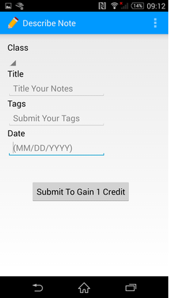

I am a second year Ph.D student at Georgia Tech advised by Dhruv Batra. I also closely collaborate with Devi Parikh and Alexander Schwing.
My research lies at the intersection of computer vision and natural language processing.
In my free time, I also help maintain and manage an AI hosting platform called EvalAI (part of CloudCV project) which aims to make AI research more reproducible. Before this, I spent a
couple of years as a Research Engineer at Snap Research where I was responsible for building large-scale infrastructure for visual recognition,
search and developed algorithms for low-shot instance detection.
Human Attention in Visual Question Answering: Do Humans and Deep Networks Look at the Same Regions?
Abhishek Das*, Harsh Agrawal*, C. Lawrence Zitnick, Devi Parikh, Dhruv Batra
Computer Vision and Image Understanding (CVIU) 2017
Emperical Methods in Natural Language Processing (EMNLP) 2016
ICML 2016 Workshop on Visualization for Deep Learning (Best Student Paper)
CloudCV began in the summer of 2013 as a research project within the Machine Learning and Perception lab at Virginia Tech (now at Georgia Tech), with the ambitious goal of making platforms to make AI research more reproducible. We’re a young community working towards enabling developers, researchers, and fellow students to build, compare and share state-of-the-art Artificial Intelligence algorithms. We believe that one shouldn’t have to be an AI expert to have access to cutting edge vision algorithms. Likewise, researchers shouldn’t have to worry about building a service around their deep learning models to showcase and share it with others.
We have participated in the past three installments of Google Summer of Code (2015-2017), over the course of which our students built several excellent tools and features.
Aarush is a prototype of the UAV developed with financial resources and engineering mentoring support
from Lockheed Martin Corporation. Traffic Management, Geomatics, Mining Surveillance, Border patrol
are just some of the areas in which this UAV can be put to effective, efficient use.
Teaser Video
Origami
Origami (previously called CloudCV-fy your code) is a AI-as-a-service solution that allows researchers to easily convert their deep learning models into an online service that is widely accessible to everyone without the need to setup the infrastructure, resolve the dependencies, and build a web service around the deep learning model. By lowering the barrier to entry to latest AI algorithms, we provide developers, researchers and students the ability to access any model using a simple REST API call.
Artificial Intelligence (AI) as a field has progressed significantly in the recent years. A major portion of this progress can be attributed to the proposal of bold new multi-modal AI tasks (recognition, captioning, VQA, Visual Dialog) together with curation of associated datasets -- Common Objects in COntext (COCO), ImageNet, Visual Question Answering (VQA), Stanford Question Answering Dataset (SQUAD), etc. Moving forward, with more datasets being released and new tasks being proposed, comparing a new algorithm with existing algorithms is nontrivial and is hindered by multiple factors:
Different evaluation schemes for the same task.
Implementation of the different metric or evaluation across different splits of the dataset.
Computational bottlenecks on evaluation servers holding unseen test data.
The Solution: EvalAI
EvalAI is an open source web platform that aims to help researchers, students and data scientists create, collaborate, and participate in AI challenges. By simplifying and standardizing the process of benchmarking AI, we want to circumvent many of the factors impeding the rate of progress in AI. Our plan is to do this in the following ways:
Reduced barrier to entry for hosting AI challenges.
Standardized evaluation protocols (same dataset splits and metrics) for measuring the performance of different algorithms on a given task.
Central public leaderboards (“who is the best on X?”).
Faster evaluation of submissions using parallelization techniques that take advantage of distributed multi-core machines.
Custom Evaluation Protocols and Phases: We have designed versatile backend framework that can support user-defined evaluation metrics, various evaluation phases, private and public leaderboard.
Faster Evaluation: The backend evaluation pipeline is engineered so that submissions can be evaluated parallelly using multiple cores on multiple machines via mapreduce frameworks offering a significant performance boost over similar web AI-challenge platforms.
Portability: Since the platform is open-source, users have the freedom to host challenges on their own private servers rather than having to explicitly depend on Cloud Services such as AWS, Azure, etc.
Centralized Leaderboard: Challenge Organizers whether host their challenge on EvalAI or forked version of EvalAI, they can send the results to main EvalAI server. This helps to build a centralized platform to keep track of different challenges.
Performance comparisons with other platforms:
EvalAI hosted Visual Question Answering (VQA) 2017 challenge as its first challenge. To give some background, last year, the VQA 2016 challenge was hosted on Codalab, and on average evaluation would take ~10 minutes. This year, the dataset for the VQA Challenge 2017 was twice as large. Despite this, we have found that our parallelized backend took only ~130 seconds to evaluate on the whole test set of VQA dataset.
Research Organizations using EvalAI:
Fabrik
Fabrik is an online collaborative platform to build, visualize and train deep learning models via a simple drag-and-drop interface. It allows researchers to collaboratively develop and debug models using a web GUI that supports importing, editing and exporting networks written in widely popular frameworks like Caffe, Keras, and TensorFlow.
GARUDA, a modified Sig Rascal 110 R/C aircraft along with its Ground Control System is capable of performing
autonomous flight & navigation, simultaneously gathering actionable surveillance data using optical sensors.
The system includes commercially available autopilot system, Piccolo II for control & navigation with a customized
imagery system capable of capturing & transmitting high definition images of the hostile territory simultaneously
processing it to deliver actionable intelligence. The Ground Control Station (GCS) and the aircraft communicate
in real time to provide situational awareness and safe and reliable flight. Due to it's modular design, the entire system
can be brought to a flying state in less than 20 minutes. We participated with this system in Student Unmanned Aerial Systems (SUAS) 2012 competition and secured 3rd position.
Garuda was developed as part of the Unmanned Aerial Systems - Delhi Technological University (UAS-DTU) project. UAS-DTU is a team of undergraduate students of Delhi Technological University, devoted to developing indigenous technological solutions for UAVs. Our ultimate goal was to reduce India's reliance on off-the-shelf products and foreign UAVs. Focussing on humanitarian uses of UAVs, we are developing a new generation of low-cost Image Processing and Flight Control Systems to aid in Surveillance and Reconnaissance.
The team, under mentorship and funding from Lockheed Martin, is the first to develop a Next Generation Urban UAS - Aarush X1, that is tailor- made for surveillance in urban jungles like Delhi and Mumbai. The team signed its first MoU with Lockheed Martin in 2009. The second MoU was signed in 2013, under which a new version of Aarush (Aarush X2) is being developed. The team annually participates in AUVSIs SUAS competition, which stands for Student Unmanned Aerial Systems competition. The competition is held in Maryland, USA where more than 30 universities come every year with their UAVs hoping to win the competition. We are the first team from India to participate in this competition (Our first participation was in 2009), and also the first team from India to achieve a podium finish (We were ranked 3rd in 2012). In 2013, the team ranked 6th. After these years of experience through the competition and Lockheed Martin project, we are now capable of manufacturing Unmanned Aerial Systems for the market with the capabilities of Aerial Imagery, and GCS Softwares for the processing of these images.
Source for the two-person chat interface used to collect the VisDial dataset on Amazon Mechanical Turk. A demo is available here (open in two separate tabs to be paired for conversation).
The real-time chat interface is built using Node.js and Socket.io. We use Redis to maintain a pool of images for live HITs and all data finally resides in a MySQL database.
A database table stores images from the COCO dataset each with a randomly picked caption. A batch of images from this table are then pushed to a Redis list for launching HITs. The web server corresponding to the chat interface pairs two AMT workers, assigns them roles (questioner or answerer) and shows corresponding interface, picks an image from the Redis list to collect data on and saves their conversation in the database, also marking that image as 'complete' once the HIT is done. This happens in parallel so workers aren't left waiting, and the server ensures workers have unique ids. Disconnects are handled gracefully — remaining worker is asked to continue asking questions or providing facts (captions) up to 10 messages. Once the HITs are complete, scripts in mturk_scripts/approve can be used to review, approve, reject HITs and pay workers.
NoteWorthy

What if you could replace the slow and monotone professor with complete and efficient notes? Rather than begging for them from the smartest students in class, Noteworthy provides a smart alternative ecosystem of notes. Whether you've simply wanted to skip a class without the academic problems, or you wanted to reinforce your education, Noteworthy gives you the greatest studying experience. Noteworthy, an app founded at MHacks, allows for easy and seamless digitization of notes. Noteworthy takes the noteworthiest notes from across the world, and brings them to you anywhere. With course, professor, and date choices, students can find the right notes for the right class on the right day. Noteworthy will save you time and get you better results for your education.
Noteworthy was developed while participating in MHacks 2014 - one of the biggest 48 hour hackathon competition orgamized by University of Michigan, Ann Arbor
Trippr
Trippr is a collaborative trip planning app powered by IBM Watson based personal assistant. This app was developed while participating
in Angel Hacks, Seattle - a 24 hour hackathon in the summer of 2013. It consisted of a combination of Android app, Pebble Smartwatch app and a Web app through which
people can chat online with their friends, ask questions to a smart personal assistant and book iteneraries.
The personal assistant powered by IBM Watson can hold conversation with the group of users to suggest popular destinations, restaurants, cheapest flights. It also automatically built an itenerary based on users choices. This app provided smart features similar to Google Trips.
Our app also won the "Best use of Respoke API" award.